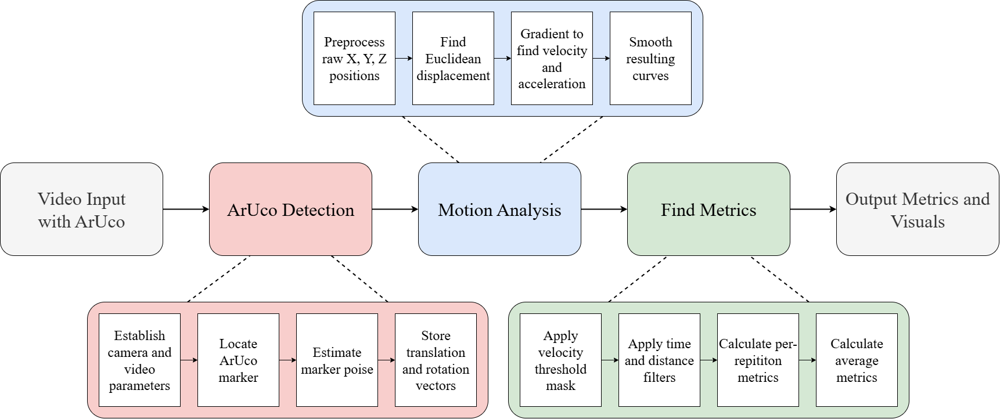
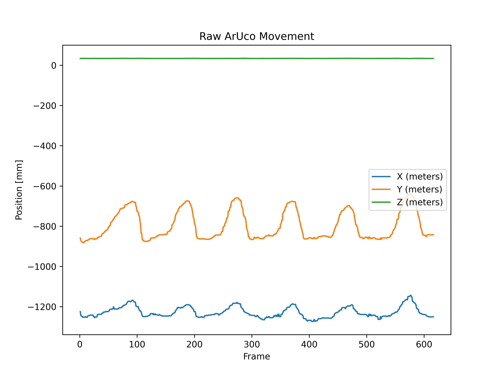
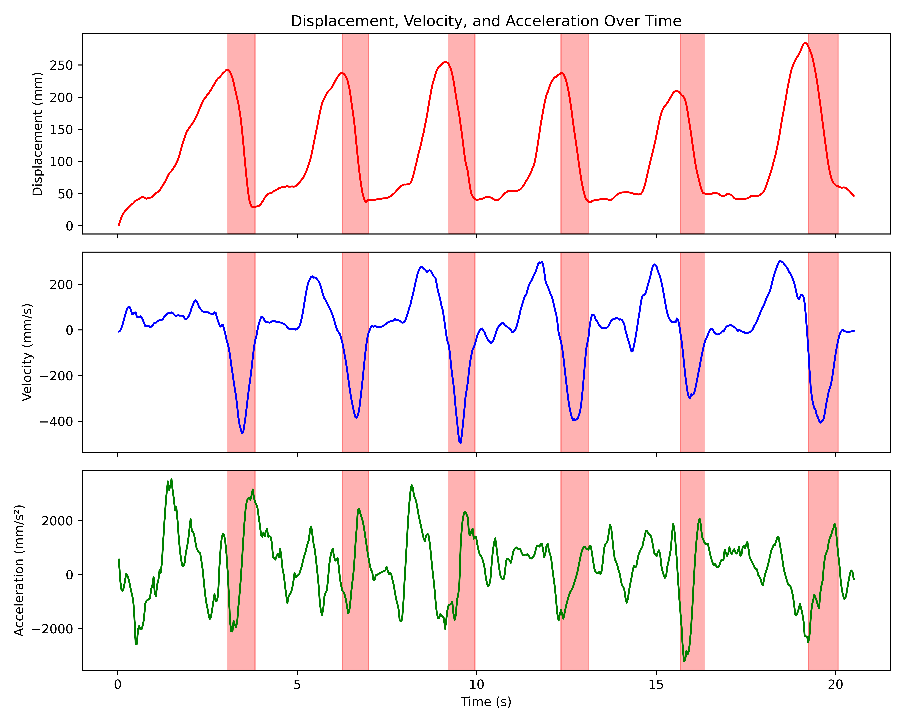

tRPE
Rate of perceived exertion (RPE) is a metric used to quantify the intensity of an exercise. It is a subjective measure that is tracked after each set of an exercise is completed. The RPE scale is from 1 to 10, with 10 being maxiumum effort. However, in practice, a scale of 5-10 is used as it is very challenging to estimate the lower intensities. In addition, the normal method to determine RPE is based on reps in reserve (RIR). The two metrics are inversely related in that an RPE of seven would imply that there were three reps in reserve for that set.
One of the inherent issues with RPE is the failure to properly estimate the true value for various reasons, such as ego, adrenaline, excitement, etc. This leads to false data being logged which will lead to poor future training. This effect is magnified when an athlete is incorrectly reporting RPE to their coach or trainer, as the trainer has no inuition as to the true feeling or exertion of their client during the lift.
Therefore, the tRPE system is intended to: 1) Create a user-friendly application to find key barbell kinemetics and metrics during a powerlift and 2) Use the metrics to create a model capable of estimating the "True RPE" of the lift.
The project is currently a work in progress and the working features are shown below. The marker detection and metric algorithm are working, however, significant data must be collected to create a RPE model. This aspect of the project is still in the works.
Media and Documents


